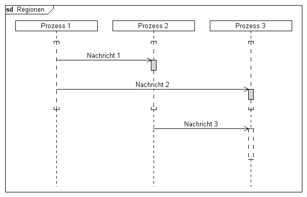

Syntax
Parameter
Syntax
Parameter
 instanceid
style
instanceid
style
| Wert | Bedeutung |
|---|---|
| activation | Die Lebenslinie wird als Aktivität dargestellt |
| coregion | Die Lebenslinie wird als Coregion dargestellt |
| suspension | Die Lebenslinie wird als Suspension dargestellt |
Beispiel
|
DiagramName: Regionen DiagramStyle: uml PageSize: 600,auto PageMargins: 10,10,10,10 process: p1, Prozess 1 process: p2, Prozess 2 process: p3, Prozess 3 regionbegin: p1, coregion regionbegin: p2, coregion regionbegin: p3, coregion; msg: p1, p2, Nachricht 1 regionbegin: p2, activation; regionend: p2; regionbegin: p3, activation msg: p1, p3, Nachricht 2; regionend: p3; regionend: p1 regionend: p2 regionend: p3; msg: p2, p3, Nachricht 3 regionbegin: p3, suspension; ; ; regionend: p3; |
 |
Siehe auch